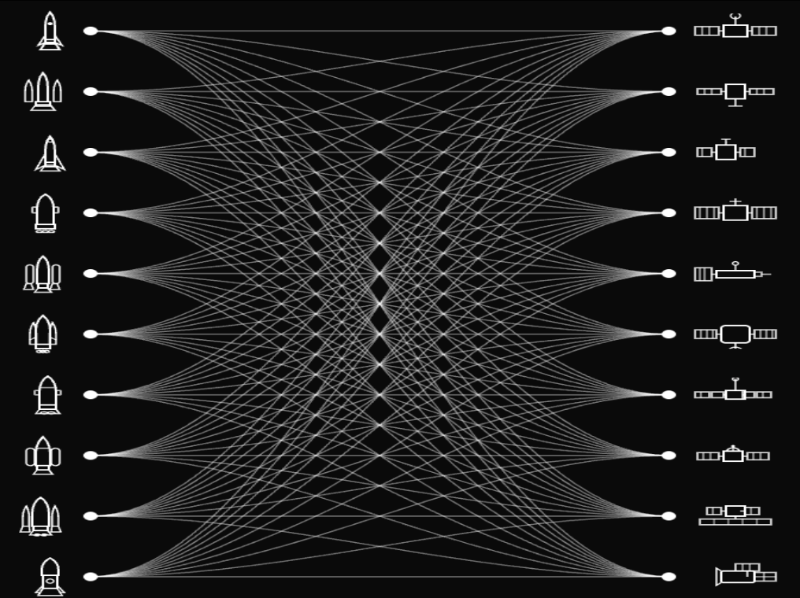
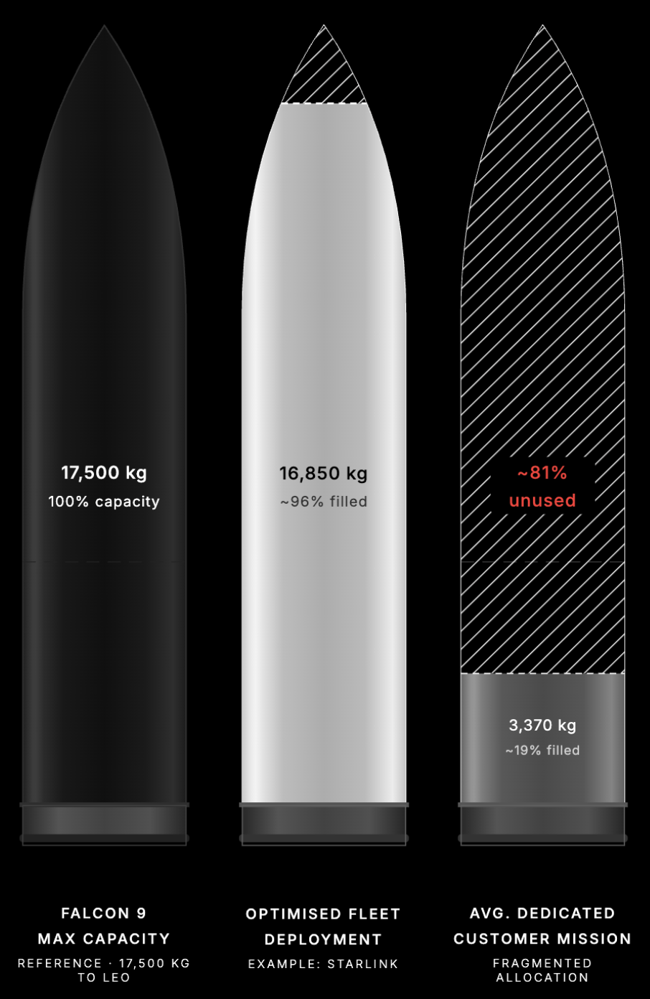

On the Nature of Market Transitions
Boltzmann understood something that markets repeatedly rediscover: entropy increases. Systems do not become simpler as they scale — they become more complex, more stateful, more difficult to navigate without a formalised layer of abstraction on top of them. The orbital launch market, in 2026, is undergoing exactly this kind of entropic expansion.
Over the past decade, reusability matured from SpaceX's audacious bet into table stakes. Launch cadence accelerated. A genuinely global competitive field emerged across the United States, Europe, India, and China. The 1-tonne-to-20+-tonne payload class now includes operational vehicles — Ariane 64, Kinetica-2, PSLV — alongside a dense pipeline targeting market entry this year and next: Rocket Lab's Neutron, Relativity Space's Terran R, Stoke Space's Nova, Isar Aerospace's Spectrum, PLD Space's Miura 5, and Starship's commercial debut on the horizon.
By any supply-side metric, the market has transformed.
But here is what the supply-side framing gets wrong: it conflates volume with accessibility. More vehicles do not automatically produce a simpler market. In many cases — and the launch market is the canonical case — they produce a harder one.
The Empirical Rebuke
Consider the data. A 2025 study published in Acta Astronautica examined NASA launch procurement across nearly three decades and found that average launch costs increased by 2.8% annually from 1996 to 2024. More striking: the authors found no evidence of a structural break following the entry of new commercial providers.
Let that sit for a moment.
New entrants. Growing supply. Competitive pressure. And costs continued rising on a statistically unbroken trend line.
This is not a failure of competition. It is evidence that the cost and complexity of launch procurement is not primarily a function of supply volume. It is a function of allocation — of matching fragmented, heterogeneous demand to a fragmented, heterogeneous supply base. And that matching problem does not get easier when you add more vehicles. It gets harder.
For optimal efficiency and pricing, launch capacity must be matched to payload demand. Large rockets that aren't filled end up being far more expensive per kilogram than a smaller rocket operating at full capacity. Economical viability can trump raw technical capability. This is not a marginal effect — it is the central economic logic of the market.
This is the coordination paradox: supply growth, in a sufficiently complex allocation market, intensifies the problem it was supposed to solve.
The Geometry of the Problem
To understand why, consider the dimensionality of a modern rideshare decision.
A payload owner evaluating launch options must simultaneously optimise across: vehicle availability and manifest compatibility, orbital insertion profile and inclination, deployer configuration and interface standards, mass budget and volume envelope, schedule windows and integration lead times, delivered-orbit economics and transfer delta-v.
Each new vehicle in the 1T+ class adds another node in this decision graph. Each new orbital profile adds another edge. The feasible mission pathway space does not grow linearly with supply — it expands combinatorially.

Meanwhile, most payload owners cannot fill an entire vehicle. This structural reality is not new, but its implications are deepening. Few companies have payload demands exceeding tens of thousands of kilograms. The common solution — buying a ride with a larger rocket sharing capacity — introduces a different class of problem: you are subject to their timelines and destinations, competing for capacity against the provider's own payloads, with wait times that can stretch to two years or more.

The result is a two-sided squeeze. Dedicated small launch solves the scheduling problem but faces brutal unit economics. Rideshare on large vehicles solves the cost problem but imposes schedule and orbital constraints that many operators cannot absorb. Neither solution scales cleanly as the supply base fragments further.
Companies originally building smaller rockets — Rocket Lab, Relativity Space, and others — are now moving upmarket into the medium and heavy class, precisely because that is where the allocation complexity concentrates. The market is converging on the exact payload class where manifest construction is hardest.
Rideshare is no longer just about finding spare room on a vehicle. It is a constraint-resolution problem. And as more vehicles and mission profiles enter the market, that constraint space expands in every dimension simultaneously.
The Mismatch at the Core of the Market
Here is the structural tension that the supply-narrative obscures.
The largest segments of the space economy — satellite internet, remote sensing, GPS, communication infrastructure — are fundamentally information technology plays. They are high-volume, constellation-scale deployments that require not one launch, but many, planned across time with orbital coordination. The demand is fragmented across dozens of operators at various scales, from mega-constellation primes to sub-scale technology demonstrators.
The supply, meanwhile, is becoming increasingly capable but increasingly heterogeneous — different vehicles, different orbital regimes, different integration standards, different pricing structures, different geographic launch bases.
In between these two sides of the market, there is no efficient clearing mechanism. Procurement remains largely manual, relationship-driven, and opaque. The $21.19 billion launch market sized in 2025, projected to exceed $70 billion by 2035 (Precedence Research), is scaling into this structural gap without the coordination infrastructure to support it.
When markets scale faster than the mechanisms that clear them, the clearing mechanism becomes the constraint.
Historical Precedent and the Infrastructure Invariant
This pattern is not novel. Markets undergoing the transition from scarcity to complexity reliably generate a class of infrastructure that was unnecessary in the prior regime and indispensable in the new one.
Freight, in the mid-twentieth century, was a scarcity problem: not enough trucks, not enough capacity. As supply scaled and fragmented, the problem transformed into an allocation problem — and freight brokerage became a multi-hundred-billion-dollar infrastructure layer on top of it. Cloud compute followed a similar arc: excess capacity from hyperscalers created an allocation market that spawned FinOps, resource scheduling, and eventually an entire discipline of cloud cost engineering. Programmatic advertising turned the scarcity economics of ad inventory into a real-time auction mechanism operating at millisecond latency across billions of impressions daily.
In each case, the underlying supply commoditised over time. The coordination intelligence did not.
The coordination layer, once established, became structurally durable — because it sits at the point where fragmented supply and fragmented demand must meet, and that meeting requires formalised logic that no individual participant in the market can efficiently internalise.
The orbital launch market has crossed the threshold into this regime. Throughout history, some of the greatest economic power has accrued not only to those who produced valuable goods, but to those who built and controlled the infrastructure through which those goods moved.
In the medieval world, merchants and caravan networks coordinated trade across the Silk Road.
In the first industrial revolution, railroad barons owned the tracks that entire industries depended on.
In the second industrial revolution, pipeline operators and refiners controlled the flow of oil.
In every era, the largest and most durable fortunes have been built not on assets alone, but on the systems that allocate them.
The space economy is entering a similar transition.
The Bottleneck Has Moved
The canonical question for the orbital access market, for most of its history, was: does capacity exist?
That question is no longer the binding constraint. Capacity exists, and more is coming online every quarter. The binding constraint is now: can the market match fragmented payload demand to that capacity intelligently, efficiently, and at scale?
This is a fundamentally different problem. It is not solved by more rockets. It is solved by better allocation infrastructure — by software that can ingest the full dimensionality of supply and demand, resolve the constraint space, and construct optimised, executable manifests across payloads with different masses, interfaces, orbital requirements, and timelines.
The bottleneck has moved from the launchpad to the coordination layer.
Aether's Thesis
Aether is not a bet on launch scarcity. We are a bet on its opposite.
Our thesis is that the orbital launch market is becoming broad enough, dynamic enough, and capacity-heavy enough that the absence of structured coordination infrastructure represents the single largest source of inefficiency remaining in the stack. Every new 1T+ vehicle that enters service validates this thesis. It adds more capacity that must be pooled, matched, and allocated. It increases the combinatorial complexity of rideshare optimisation. It increases the economic cost of allocation failure.
We are building the operating system for this market — the layer that converts a structurally fragmented supply base and an equally fragmented demand base into optimised, matched, executable missions.
The supply-side expansion in orbital launch is one of the most consequential structural shifts in the history of the industry. But its deepest implication is not that access has become easier. It is that coordination has become infrastructure.
That is exactly where Aether is being built.
If you're launching (or planning to launch) in the next 24 months and want a system that actually matches your payload to the right vehicle, orbit, and timeline — .